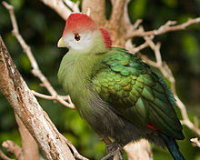

General information about Birds
Birds are a group of warm-blooded vertebrates constituting the class Aves, characterised by
- feathers
- toothless beaked jaws
- the laying of hard-shelled eggs
- a high metabolic rate
- a four-chambered heart
- a strong yet lightweight skeleton
Birds live worldwide and range in size from the 5.5 cm (2.2 in) bee hummingbird to the 2.8 m (9 ft 2 in) ostrich.
There are about ten thousand living species, more than half of which are passerine, or perching birds. Birds have wings whose development varies according to species; the only known groups without wings are the extinct moa and elephant birds. Wings, which are modified forelimbs, gave birds the ability to fly, although further evolution has led to the loss of flight in some birds, including ratites, penguins, and diverse endemic island species. The digestive and respiratory systems of birds are also uniquely adapted for flight. Some bird species of aquatic environments, particularly seabirds and some waterbirds, have further evolved for swimming.
Gauthier and de Queiroz[12] identified four different definitions for the same biological name "Aves", which is a problem. The authors proposed to reserve the term Aves only for the crown group consisting of the last common ancestor of all living birds and all of its descendants, which corresponds to meaning number 4 below. He assigned other names to the other groups.
- Aves can mean all archosaurs closer to birds than to crocodiles (alternately Avemetatarsalia)
- Aves can mean those advanced archosaurs with feathers (alternately Avifilopluma)
- Aves can mean those feathered dinosaurs that fly (alternately Avialae)
- Aves can mean the last common ancestor of all the currently living birds and all of its descendants (a "crown group", in this sense synonymous with Neornithes)
Many species of birds are economically important as food for human consumption and raw material in manufacturing, with domesticated and undomesticated birds being important sources of eggs, meat, and feathers. Songbirds, parrots, and other species are popular as pets. Guano (bird excrement) is harvested for use as a fertiliser. Birds figure throughout human culture. About 120 to 130 species have become extinct due to human activity since the 17th century, and hundreds more before then. Human activity threatens about 1,200 bird species with extinction, though efforts are underway to protect them. Recreational birdwatching is an important part of the ecotourism industry.